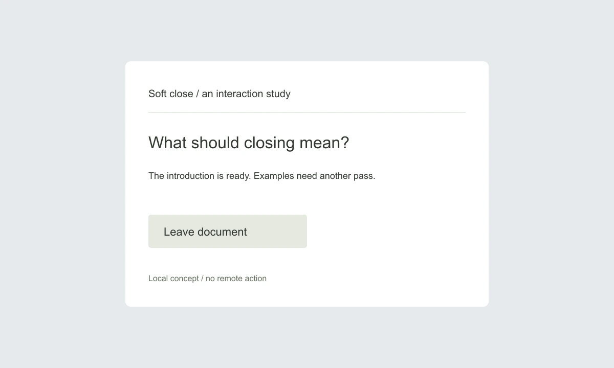
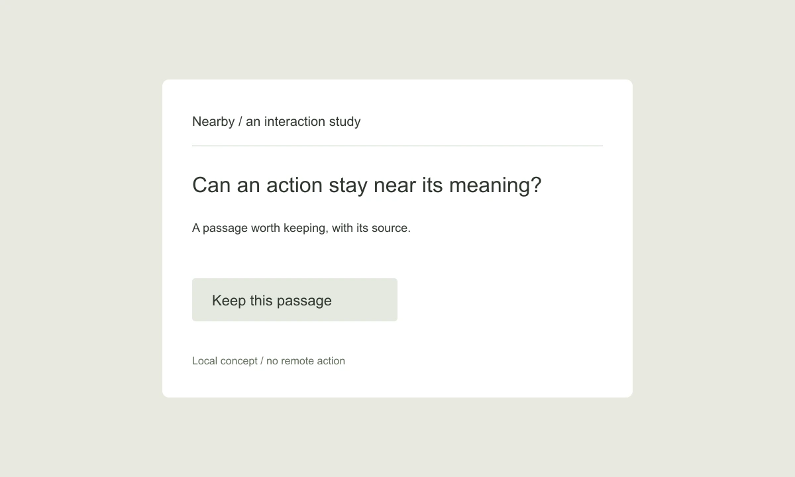

Return
A way back into interrupted work.

Interaction designer
I explore the moments around a task: arriving, pausing, leaving, and finding a way back. Three original studies, with room for questions.
A way back into interrupted work.
Leaving without losing the thread.

Finding an action where the question begins.
